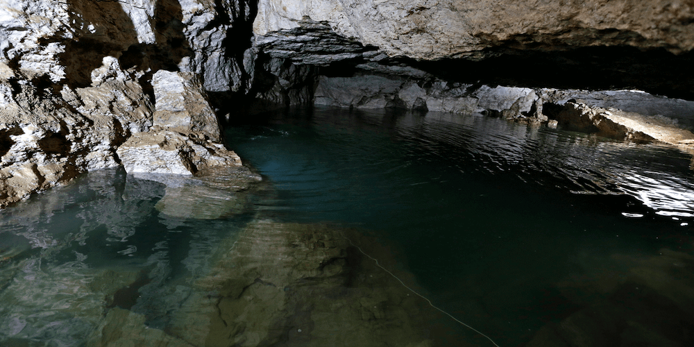

ЦІКАВІ МІСЦЯ УКРАЇНИ, ЯКІ ВАС ВРАЗЯТЬ:
Щоб побачити печери, каньйони, рожеві озера та величезні скелі не треба їхати за кордон. В Україні є безліч цікавих та мальовничих місць. Зібрали для вас топові природні місця, які варто відвідати.
Оптимістична печера
Тернопільська область

Оптимістичну печеру відкрили у 1966 році, знаходиться вона у Борщівському районі Тернопільської області неподалік села Королівка. Це найдовша гіпсова печера у світі: довжина — близько 260 км. Вона досі повністю не досліджена, в експедиції сюди приїжджають спелеологи з усього світу. Всередині печери лабіринти, багато мінеральних утворень (кристалів, сталактитів, геліктитів) та навіть підземні озера. Подивитись є на що.
Потрапити на екскурсію та побачити усе на власні очі це цікаве місце може кожен охочий. Є офіційний сайт з усією необхідною інформацією: як доїхати, де жити, яке спорядження потрібно, фото та відео звіти. На сайті можна вибрати екскурсію, є різні рівні складності: найлегші ознайомчі екскурсії підійдуть навіть для дітей, також є маршрути середньої складності та екстремальні та довгі маршрути для досвідчених та витривалих.
Тустань
Львівська область
Тустань — наскельне місто-фортеця, яке було оборонним та адміністративним центром протягом 9-15 століть. Знаходиться Тустань неподалік села Урич у Сколівському районі Львівської області. Заснували місто племена хорватів, потім його завоювали поляки, а з кінця 16 століття Тустань почала занепадати та згодом залишились лише кам’яні основи фортеці. Завдяки дослідженням та археологічним розкопкам вченим вдалось відновити графічну реконструкцію фортеці з точністю майже 90%.

У 1994 році задля збереження наскельного комплексу було створено національний історико-заповідний комплекс, зараз це популярне туристичне місце. З 2012 року тут щороку проводиться фестиваль української середньовічної культури «Ту Стань!». Місце справді дуже гарне й захоплююче. З оглядового майданчика на скелях відкривається неймовірно красивий краєвид. А навколо є зручний пішохідний маршрут. До речі, в нас є готовий маршрут Західною Україною, до якого ми включили Тустань.
Вухатий Камінь
Івано-Франківська область


Вухатий Камінь — це мальовнича гора у Карпатах у масиві Чорногори, що знаходиться у Верховинському районі Івано-Франківської області, висота — 1864 м над рівнем моря. Гора цікава тим, що на вершині є скелі чудернацької форми — улюблене місце для перепочинку та фотографій усіх туристів. А ще з Вухатого Каменя відкривається неймовірно гарний краєвид на Карпати. Через гору проходить маршрут з села Дземброня на вершину Чорногірського хребта, також через Вухатий Камінь можна пройти на гору Піп Іван. Ще одна атракція — Дзембронські водоспади, які знаходяться на північно-східному схилі гори.
ЧИ ЗНАЛИ ВИ ЦЕ ПРО УКРАЇНУ? НЕЙМОВІРНО ЦІКАВІ ФАКТИ, ПРО ЯКІ МАЙЖЕ НІХТО НЕ ЗНАЄ
- Найперша Конституція в світі була створена українцем Пилипом Орликом. 5 квітня 1710 його обрали гетьманом запорізького війська. У цей же день ним було оголошено «Конституцію прав і свобод війська Запорізького». У США Конституцію прийняли в 1787 р., у Франції та Польщі тільки в 1791
- В 1934 році в Парижі на конкурсі краси мов українська мова зайняла третє місце після французької та перської за такими критеріями, як фонетика, лексика, фразеологія, структура речень. Мелодійність же української визнана другою найгарнішою серед мов світу, після італійської.
- Українська мова є однією з найпоширеніших мов в світі (фахівці розрізняють близько 7000 мов ) і за кількістю носіїв займає 26-те місце. Також вона є другою за поширеністю серед мов слов’янського походження після російської. На території України більше 32 мільйонів осіб вільно спілкуються українською мовою.
- Найбільш вживаною літерою в українському алфавіті є літера “п”. Також на цю літеру починається найбільша кількість слів. Тоді ж як найрідше вживаною літерою українського алфавіту є “ф”. В українській мові слова, які починається з цієї літери, в більшості випадків запозичені з інших мов.
- З точки зору лексики найближчими до української мови є білоруська (84%) і польська (70%) мови.
- Найчастіше серед іменників вживається слово «рука», серед дієслів — «бути», прикметників — «великий», займенників — «він». Останні місця в таблиці частотності займають слова «мутація», «баклажка», «радист», «білочка».
- Найдовший музичний інструмент у світі – це українська трембіта. Її довжина може досягати чотирьох метрів, а її звуки чутні більш ніж за десять кілометрів.
- На території України зосереджено 1/4 всіх запасів чорнозему на планеті. Чорноземні ґрунти при правильній обробці дають найбільшу кількість врожаю і дуже цінні. Під час Другої Світової війни німецькі солдати навіть вивозили чорнозем на поїздах.
- Перший друкований буквар, виданий українським автором, мав назву «Наука до читання й розуміння слов’янського письма». Він вийшов в світ у Вільні (суч. Вільнюс) в 1596 р. стараннями Лаврентія Зизанія. До книжки було додано словник, який містив 1061 слово.
- Першим букварем, виданим в Україні, був «Буквар» («Азбука»), надрукований у 1574 р. у Львові першодрукарем Іваном Федоровим. Книжка складалася з абетки, складів, зразків відмінювання і короткої читанки. До нас дійшов лише один примірник, який знайдено в Римі 1927 р. Зберігається в бібліотеці Гарвардського університету (США). Факсимільне видання було здійснено в Києві 1964 та 1974 рр.
І ще трошки цікавого, чого ви могли не знати про Україну та українців:
- Під час англо-бурської війни (Південна Африка) в 1899-1902 рр. командир одного з загонів бурів, українець Юрій Будяк, врятував від розстрілу одного молодого англійського журналіста. Згодом останній допоміг Будяку вступити до Оксфордського університету. В 1917 р. Юрій працював в уряді Української Народної Республіки. В 1943 р. Юрій Будяк помер в радянському концтаборі. Англійського журналіста звали Вінстон Черчилль.
- Українські народні пісні спонукали багатьох композиторів до написання світових музичних шедеврів. Наприклад, в основі композиції Summertime — арії, яку написав Джордж Гершвін у 1935 р. для опери «Поргі та Бесс», однієї з найвідоміших пісень у світі — лежить українська колискова «Ой, ходить сон коло вікон». Цю композицію Гершвін почув у Нью-Йорку у виконанні Українського Національного Хору під керівництвом Олександра Кошица. Почув — і написав одне з найгеніальніших і найвідоміших джазових творінь. З моменту написання композиції її виконали безліч виконавців, але найвідомішим лишається Summertime у виконанні Луї Армстронга, Елли Фіцджеральд, а також Чарлі Паркера.
- В сучасній українській мові, на відміну від російської, збереглися давньослов’янські назви місяців: сiчень (час вирубки лісу), лютий (люті морози), березень (тут існує кілька тлумачень: починає цвісти береза; брали березовий сік ; палили березу на вугілля), квітень (початок цвітіння берези), травень (зеленіє трава), червень (червоніють вишні), липень (початок цвітіння липи), серпень (від слова «серп» , що вказує на час жнив), вересень (цвітіння вересу), жовтень (жовтіють листя), листопад (опадає листя з дерев), грудень (від слова «груда» — мерзла колія на дорозі).
- Сама древня згадка про українську мову була в 858 році. Після видання «Енеїди» Івана Котляревського, українська мова була прирівняна до літературної мови. Івана Котляревського і по праву вважають основоположником нової української мови.